Regression comparison
Download resultsAggregation weights
\widehat y(x)=y_{\rm mean}+y_{\rm std}\sum_{h=1}^{H}\beta_h\mu_h(x)Coefficients can be negative and need not sum to one. Intervals describe coefficient uncertainty; the dashed reference is DE’s fixed 1/H weight.
BDKN

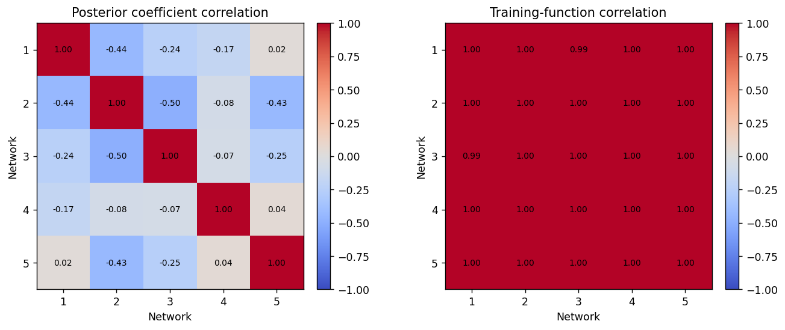


Each density panel uses its own X range for readability; coefficient intervals above share a common axis. Prior reference conditions on fitted noise. Contribution shares use held-out inputs; test targets are used only for scoring.
| Network | β mean | 95% low | 95% high | P(β > 0) | Contribution share | Test RMSE | Test NLL |
|---|---|---|---|---|---|---|---|
| 1 | 0.15914 | -0.34378 | 0.66206 | 0.73694 | 0.10339 | 1.22604 | 3.28984 |
| 2 | 0.26043 | -0.36725 | 0.88811 | 0.79665 | 0.27520 | 1.50533 | 12.03988 |
| 3 | 0.22915 | -0.27019 | 0.72850 | 0.82038 | 0.21502 | 1.32037 | 9.46759 |
| 4 | 0.05241 | -0.67124 | 0.77606 | 0.55782 | 0.00895 | 1.10368 | 1.55372 |
| 5 | 0.35756 | -0.02672 | 0.74184 | 0.96634 | 0.39743 | 1.54360 | 13.74209 |
Functional repulsion · BDKN
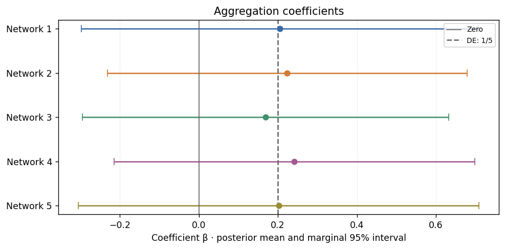
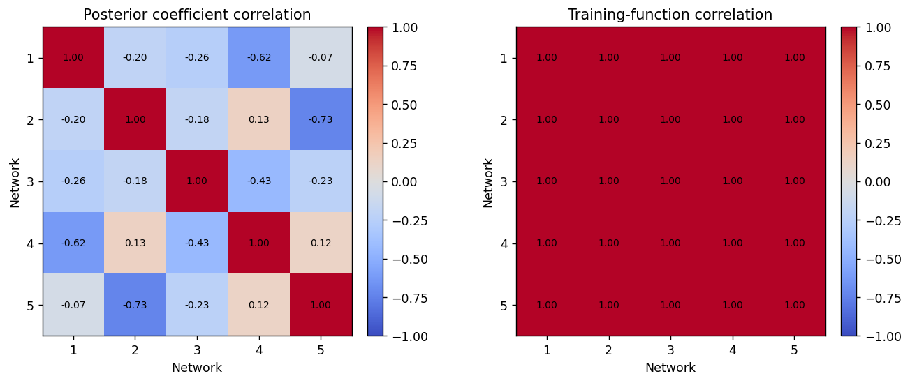
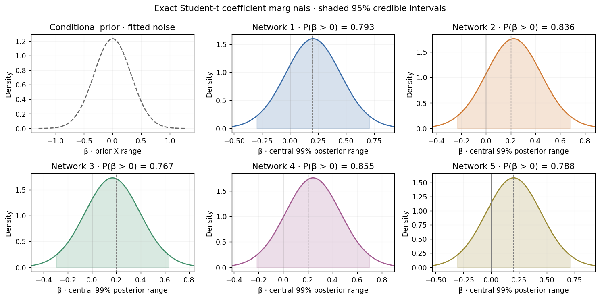
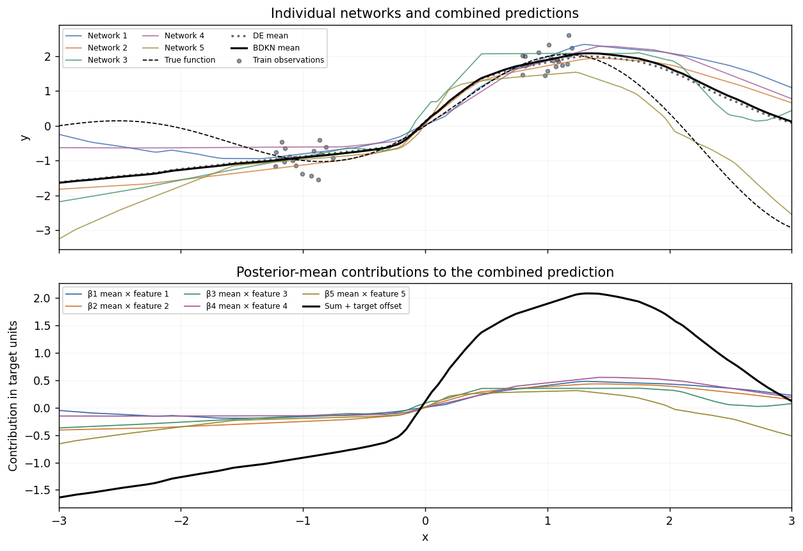
Each density panel uses its own X range for readability; coefficient intervals above share a common axis. Prior reference conditions on fitted noise. Contribution shares use held-out inputs; test targets are used only for scoring.
| Network | β mean | 95% low | 95% high | P(β > 0) | Contribution share | Test RMSE | Test NLL |
|---|---|---|---|---|---|---|---|
| 1 | 0.20531 | -0.29661 | 0.70723 | 0.79335 | 0.18844 | 1.45926 | 53.14558 |
| 2 | 0.22336 | -0.23170 | 0.67842 | 0.83643 | 0.23268 | 1.44800 | 18.55784 |
| 3 | 0.16917 | -0.29438 | 0.63272 | 0.76746 | 0.17651 | 1.33047 | 65.88770 |
| 4 | 0.24177 | -0.21445 | 0.69798 | 0.85472 | 0.20467 | 1.37295 | 2.62634 |
| 5 | 0.20229 | -0.30431 | 0.70889 | 0.78779 | 0.19769 | 1.11697 | 20.40617 |
Weight repulsion · BDKN
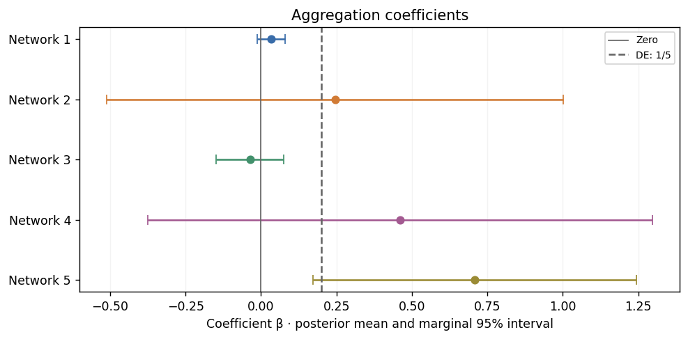
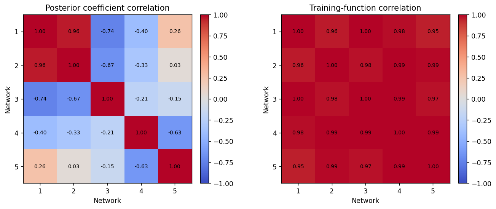
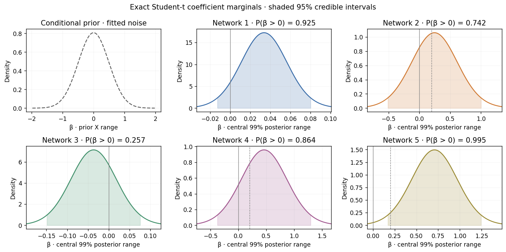
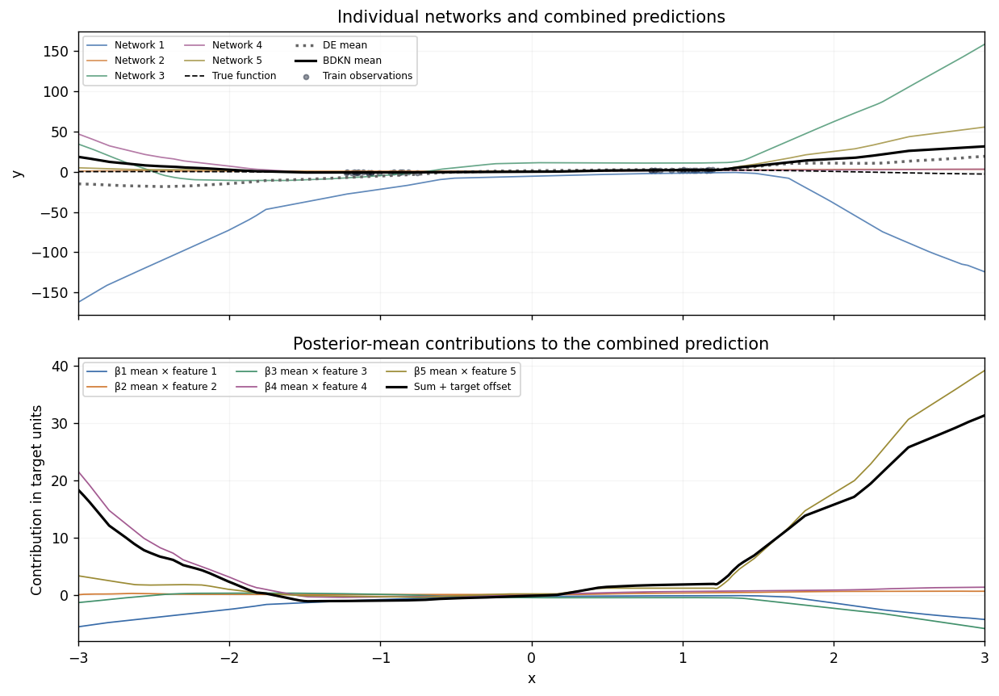
Each density panel uses its own X range for readability; coefficient intervals above share a common axis. Prior reference conditions on fitted noise. Contribution shares use held-out inputs; test targets are used only for scoring.
| Network | β mean | 95% low | 95% high | P(β > 0) | Contribution share | Test RMSE | Test NLL |
|---|---|---|---|---|---|---|---|
| 1 | 0.03375 | -0.01273 | 0.08023 | 0.92497 | 0.12011 | 61.59217 | 743598173.77104 |
| 2 | 0.24516 | -0.51054 | 1.00086 | 0.74210 | 0.02902 | 2.12827 | 51.84812 |
| 3 | -0.03652 | -0.14850 | 0.07546 | 0.25679 | 0.09002 | 49.08652 | 4295487.35263 |
| 4 | 0.46114 | -0.37564 | 1.29793 | 0.86399 | 0.17239 | 9.77154 | 1009.29844 |
| 5 | 0.70781 | 0.17173 | 1.24388 | 0.99452 | 0.58846 | 19.11503 | 4.96350 |
First-order repulsion · BDKN
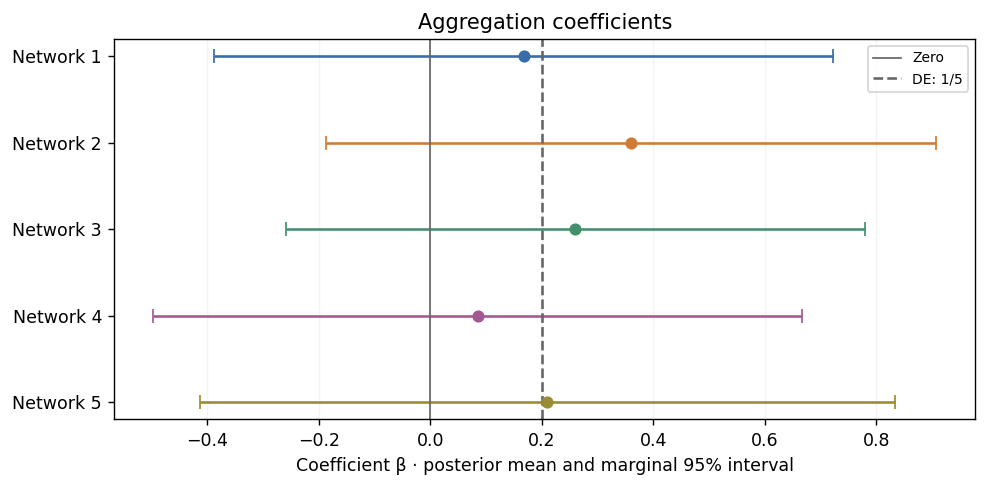
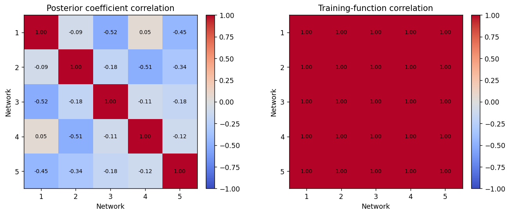
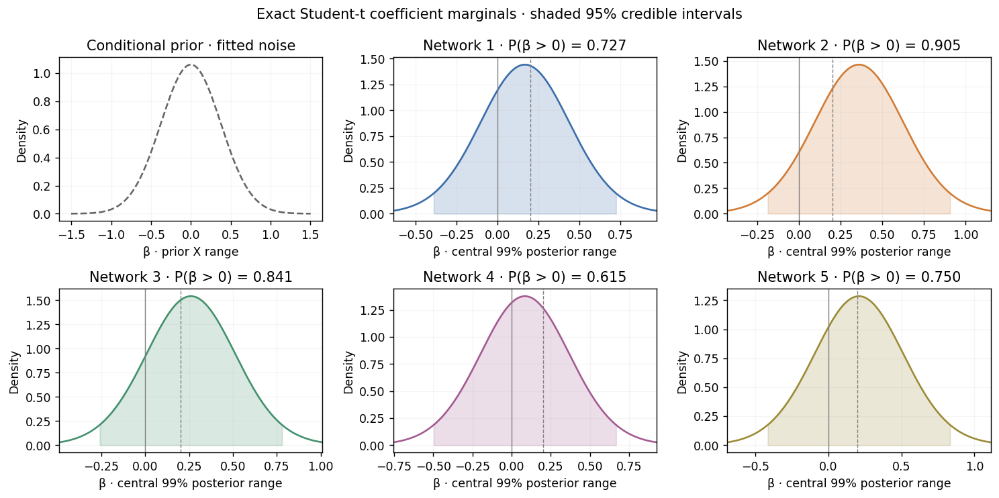
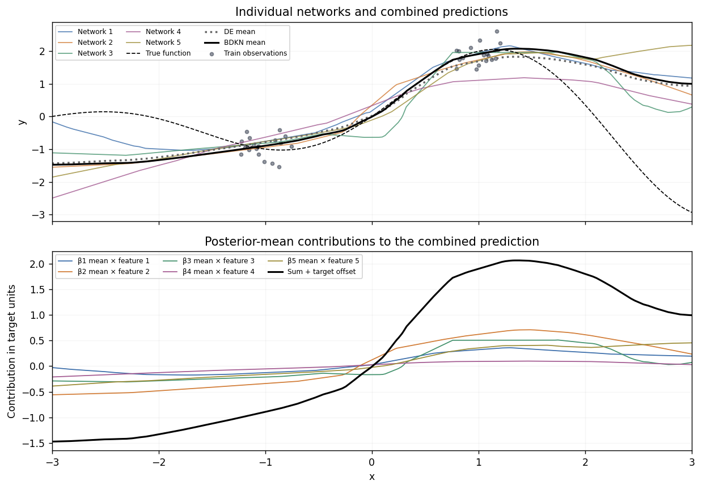
Each density panel uses its own X range for readability; coefficient intervals above share a common axis. Prior reference conditions on fitted noise. Contribution shares use held-out inputs; test targets are used only for scoring.
| Network | β mean | 95% low | 95% high | P(β > 0) | Contribution share | Test RMSE | Test NLL |
|---|---|---|---|---|---|---|---|
| 1 | 0.16736 | -0.38849 | 0.72320 | 0.72686 | 0.14434 | 1.33828 | 5.04459 |
| 2 | 0.36064 | -0.18646 | 0.90774 | 0.90484 | 0.35388 | 1.38552 | 9.47932 |
| 3 | 0.25965 | -0.25988 | 0.77918 | 0.84074 | 0.22219 | 1.15805 | 24.68945 |
| 4 | 0.08453 | -0.49703 | 0.66609 | 0.61477 | 0.06567 | 1.37625 | 1.71424 |
| 5 | 0.21007 | -0.41310 | 0.83324 | 0.75020 | 0.21392 | 1.70232 | 16.46104 |